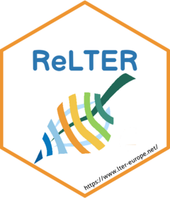

Get all sites within a given distance of a point location
Source:R/get_sites_within_radius.R
get_sites_within_radius.Rd![[Experimental]](figures/lifecycle-experimental.svg) retrieve all sites within a given distance from
the center point (in coordinates lat, lon), and in
the (optionally) specified elevation range.
retrieve all sites within a given distance from
the center point (in coordinates lat, lon), and in
the (optionally) specified elevation range.
Usage
get_sites_within_radius(
lat = 39.1386,
lon = -8.33305,
distance = 1,
elevation_range = c(NULL, NULL),
show_map = TRUE
)Examples
# example code
get_sites_within_radius(lat=39.1386, lon=-8.33305, distance=900)
#> Warning: incomplete final line found on 'https://deims.org/geoserver/deims/ows?service=WFS&version=2.0.0&request=GetFeature&TypeName=deims:deims_all_sites&outputFormat=application/json&CQL_FILTER=DWITHIN(geom,Point(39.1386%20-8.33305),900,kilometers)'
#> Simple feature collection with 1318 features and 5 fields
#> Geometry type: POINT
#> Dimension: XY
#> Bounding box: xmin: -156.6674 ymin: -78 xmax: 175.085 ymax: 83.07682
#> Geodetic CRS: WGS 84
#> First 10 features:
#> name field_coordinates_lat
#> 1 McMurdo Dry Valleys LTER -78.00000
#> 2 Mooring A: Southwestern Ross Sea, Ross Island -76.70000
#> 3 IT17-Antarctica Research Station -75.69570
#> 4 Mooring D: Western Ross Sea, TerraNova Bay Polynya -75.13300
#> 5 OZCAR-RI Glacioclim Dome C site -75.10000
#> 6 Macrosito Baia Terranova (MBT) -74.71670
#> 7 Mooring B: North Central Ross Sea, Joides Basin -74.01050
#> 8 LTSER Zone Atelier Antarctique -67.00000
#> 9 OZCAR-RI Glacioclim Cap Prud'Homme Site -66.69289
#> 10 Palmer Station LTER -64.77430
#> field_coordinates_lon deimsid
#> 1 162.0000 https://deims.org/61320397-64ef-4d2f-b774-97ea094bc5d2
#> 2 169.0920 https://deims.org/86b6465c-b604-4efa-9145-0805f62216f4
#> 3 171.5170 https://deims.org/a0df48f6-bd2b-42b2-919a-77cb41220440
#> 4 164.5420 https://deims.org/b4121cd7-8b02-4872-b1d2-516d1c02056a
#> 5 -123.3300 https://deims.org/13ee3167-efbc-4046-a74e-11156b58bb81
#> 6 164.1330 https://deims.org/7fb8e2c6-b11f-41a7-b494-44ceeb3bed2d
#> 7 175.0850 https://deims.org/1fb62b9c-4d5c-4f1f-8882-807032337de7
#> 8 139.0000 https://deims.org/5d621971-e68c-4015-b01f-a259f27dd6a0
#> 9 139.9092 https://deims.org/4a405a4b-5eed-40a7-be42-bfda96d02c00
#> 10 -64.0529 https://deims.org/0c24abb5-ebe1-49ef-a324-fd9d16ae3ee5
#> field_elevation_avg_value geometry
#> 1 100 POINT (162 -78)
#> 2 -400 POINT (169.092 -76.7)
#> 3 -350 POINT (171.517 -75.6957)
#> 4 -1157 POINT (164.542 -75.133)
#> 5 3200 POINT (-123.33 -75.1)
#> 6 -200 POINT (164.133 -74.7167)
#> 7 -300 POINT (175.085 -74.0105)
#> 8 300 POINT (139 -67)
#> 9 100 POINT (139.9092 -66.69289)
#> 10 0 POINT (-64.0529 -64.7743)